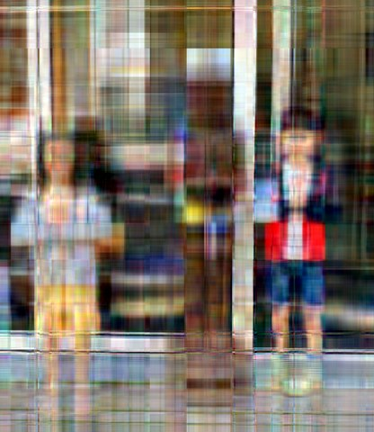

04 · Visual Lab
Interactive course graphs
Deterministic visual checks for preprocessing and PCA. Dataset panels use verified summaries from the supplied course files.
Missing values and mean imputation
Replacing missing values at the observed mean keeps the center stable but compresses the spread.
Boxplot fences under normality
The usual 1.5 IQR rule marks about 0.7% of normal observations as outliers.
Normal vs lognormal summaries
Right skew pulls the mean above the median; the gap grows with log-scale sigma.
Scaling before distance models
A large-scale variable dominates distances until both variables are standardized.
Churn EDA from the course dataset
Recreates the R script's churn checks: conditional probabilities for international plan and boxplot summaries for evening charge.
PCA rotation of correlated variables
Change correlation and watch the principal axes retain the same symmetric directions while their variances separate.
Houses scree and retention threshold
Use the verified eigenvalue proportions from the supplied houses data to choose the smallest retained dimension.
Houses loading map
Compare the first two loading vectors: block size on PC1 and geographic location on PC2.
Photo compression with truncated PCA
The displayed variants use a 416 x 480 browser copy of the supplied course image, with uncentered PCA applied separately to all RGB channels. The course's full-resolution method is identical.
